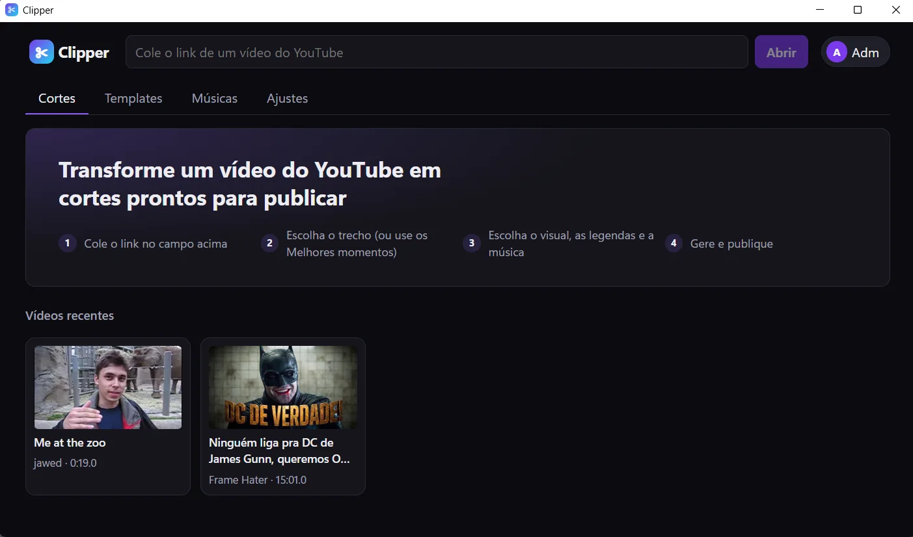
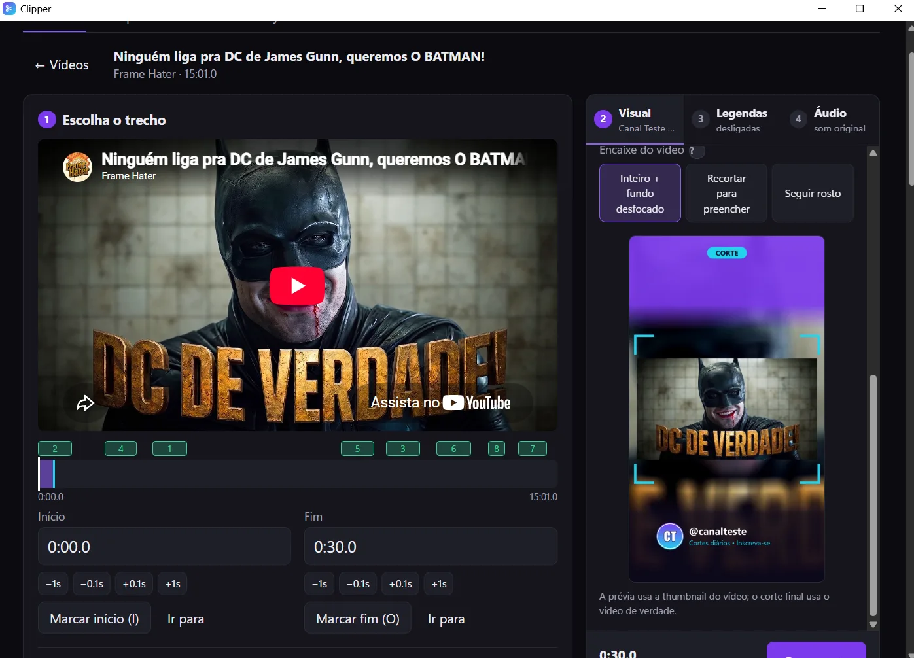
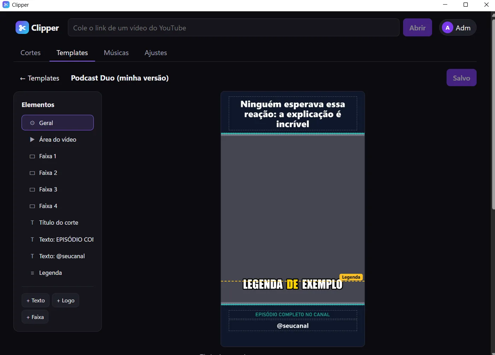
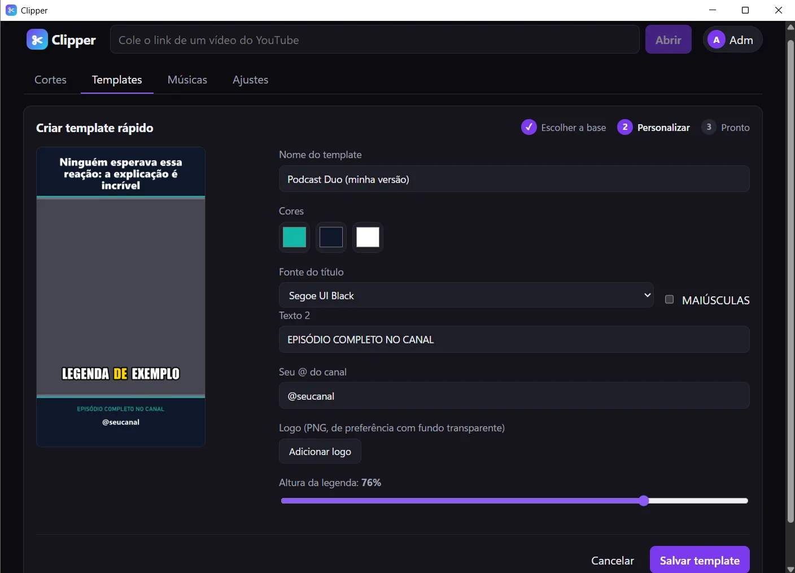
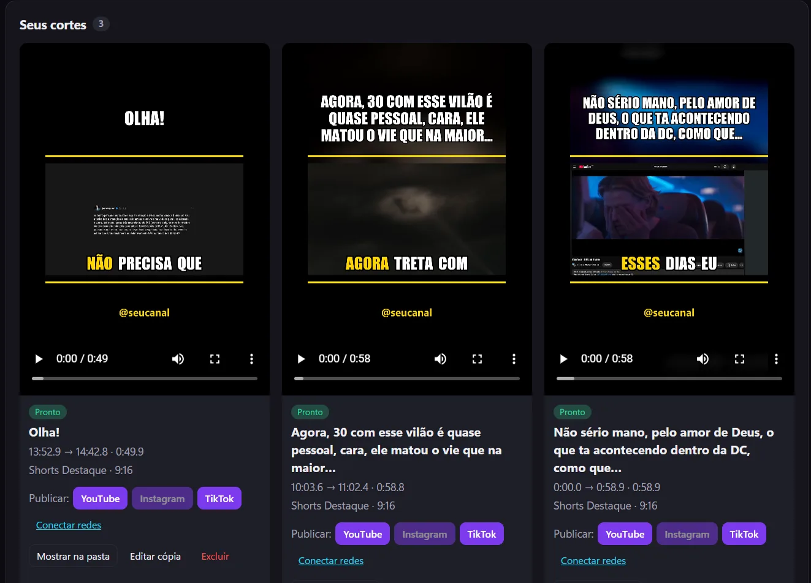
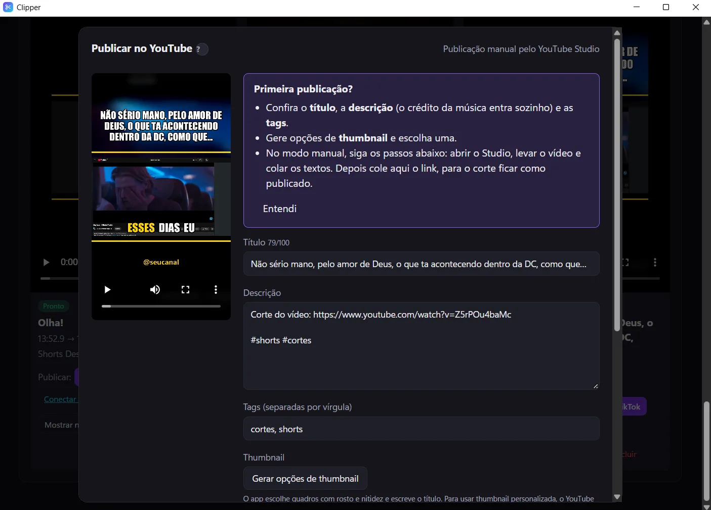
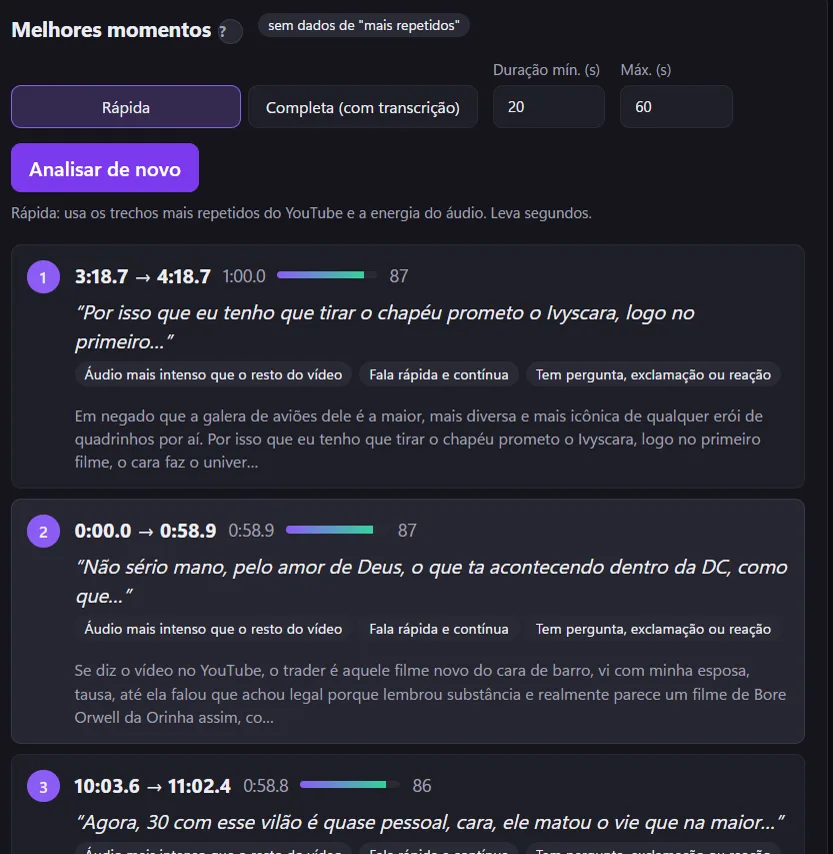
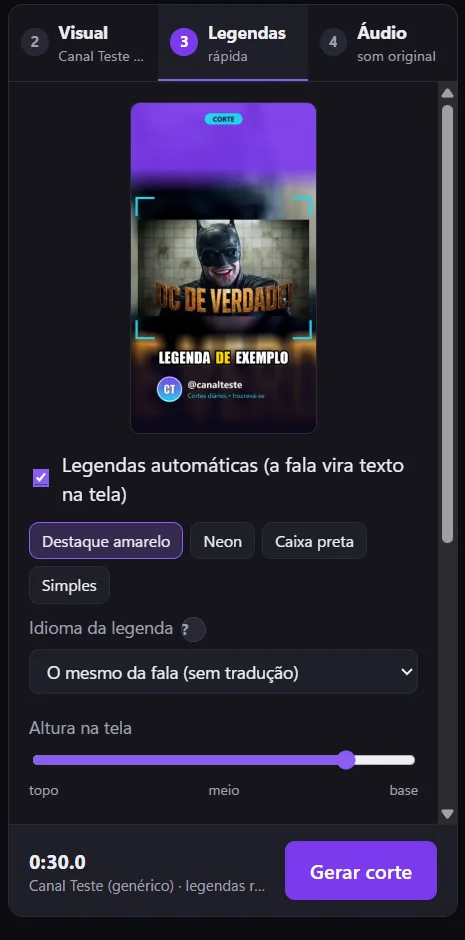
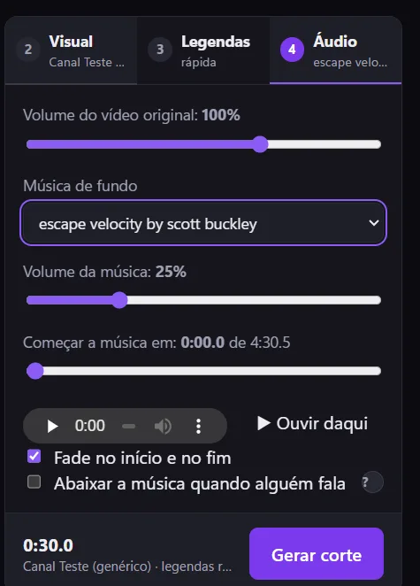

✂️ Clipper
Vídeos do YouTube viram cortes verticais prontos para publicar
Visão Geral do Projeto
O Clipper é um app desktop para Windows que automatiza o trabalho de um canal de cortes: você cola o link de um vídeo do YouTube, escolhe o trecho (ou deixa o app sugerir os melhores momentos), aplica um layout vertical com título, legendas e música, e publica no YouTube, Instagram e TikTok. Toda a transcrição e a renderização rodam no computador do usuário, sem custo de nuvem.
Fazer cortes à mão exige assistir ao vídeo inteiro, recortar num editor, montar a moldura, legendar palavra por palavra e repetir o upload em cada rede. O Clipper junta esse fluxo em quatro passos e reduz um corte de 30 segundos a menos de um minuto de processamento num PC comum.

Telas do App






Painéis do editor



Stack Tecnológica
Backend e processamento
IA local
Frontend e desktop
Integrações e infraestrutura
Funcionalidades Principais
Melhores Momentos
Cada janela do vídeo recebe uma nota que combina o mapa de "mais repetidos" do YouTube, a energia e a dinâmica do áudio, a densidade de fala e ganchos na transcrição (perguntas, exclamações, palavras-chave). As sugestões não se sobrepõem e terminam em frases completas.
Legendas Automáticas
Transcrição com faster-whisper rodando na CPU, em blocos de até 3 palavras com a palavra falada em destaque. Revisão do texto antes de gerar e tradução local para PT-BR, EN e ES.
Glossário de Transcrição
Nomes e bordões que o modelo costuma errar entram como contexto (initial prompt e hotwords), junto com o título, o canal e os capítulos do vídeo.
Seguir Rosto
Detecção de rostos com OpenCV (YuNet) e recorte suavizado que acompanha quem está falando ao converter vídeo horizontal em vertical.
Editor de Templates
12 layouts prontos, criação rápida com cores, logo e fonte, e um editor visual com arrastar, redimensionar, alinhamento magnético e fontes TTF/OTF próprias.
Música de Fundo
Biblioteca de músicas com licença, fade, loop e ducking (a música abaixa quando alguém fala). O crédito exigido pela licença entra sozinho na descrição.
Thumbnails Automáticas
Gera 3 opções em 1280×720 escolhendo quadros nítidos e com rosto, já com o título escrito.
Publicação nas Redes
Upload retomável para o YouTube via OAuth, Reels no Instagram pela API oficial e fluxo assistido para o TikTok. Histórico com o link de cada corte publicado.
Arquitetura
App desktop (pywebview) ─▶ Frontend React 19 + TypeScript (Vite)
│
▼
API FastAPI + SQLModel/Alembic
│
Fila de jobs persistida no banco
┌────────────────────┼────────────────────┐
upload leve pesado
(YouTube, (download do trecho, (transcrição,
Instagram) thumbnails, análise) renderização FFmpeg)
- ✅ Fila de jobs no banco com três filas separadas, para que um upload ou uma renderização longa não trave o resto do app
- ✅ yt-dlp baixa só o trecho escolhido, e não o vídeo inteiro
- ✅ Overlay do template desenhado com Pillow e composto pelo FFmpeg num único passo de renderização
- ✅ Mesmo código em dois modos: instalador Windows (SQLite, PyInstaller + Inno Setup) ou servidor com Docker Compose (app, worker, PostgreSQL e Caddy) na Oracle Cloud
- ✅ Multiusuário com dados isolados, convites assinados, backup exportável e aviso de atualização
Desafios Técnicos Superados
- 1. Transcrição boa sem GPU O faster-whisper roda em int8 na CPU, com dois modos: "Rápida" (modelo base) para uma ideia em segundos e "Precisa" (large-v3-turbo) para a versão final. A transcrição completa é reaproveitada quando já existe uma feita com um modelo igual ou melhor.
- 2. Achar o trecho que prende Calibrei pesos entre o mapa de "mais repetidos", a energia do áudio e os ganchos na fala, favorecendo picos em vez de médias e evitando sugestões sobrepostas. O resultado aparece com nota e motivos para o usuário decidir rápido.
- 3. Limite de envios do YouTube A cota da API permite poucos uploads por dia. O app usa upload retomável, tem uma publicação manual guiada como alternativa e uma automação opcional do YouTube Studio para tornar os vídeos públicos.
- 4. Instagram exige uma URL pública A API do Instagram busca o vídeo por URL, mas o arquivo está no PC do usuário. A solução foi abrir um túnel temporário da Cloudflare só durante a publicação.
- 5. Distribuir um app Python como programa comum Empacotamento com PyInstaller, instalador Inno Setup que não pede administrador, download de modelos sob demanda e tours guiados para quem nunca editou vídeo.
Aprendizados e Skills Demonstradas
Processamento de mídia
- Filtros complexos no FFmpeg
- Mixagem com sidechain (ducking)
- Legendas queimadas e animadas
IA rodando local
- Speech-to-text com Whisper
- Tradução com CTranslate2
- Detecção de rosto com OpenCV
Backend Python
- FastAPI + SQLModel + Alembic
- Fila de jobs com workers
- OAuth e APIs de terceiros
Produto
- Instalador e atualizações
- Onboarding com tours
- Versão de testes com usuários reais
Experimente o Clipper
Versão de testes para Windows 10 e 11. O código-fonte é privado.